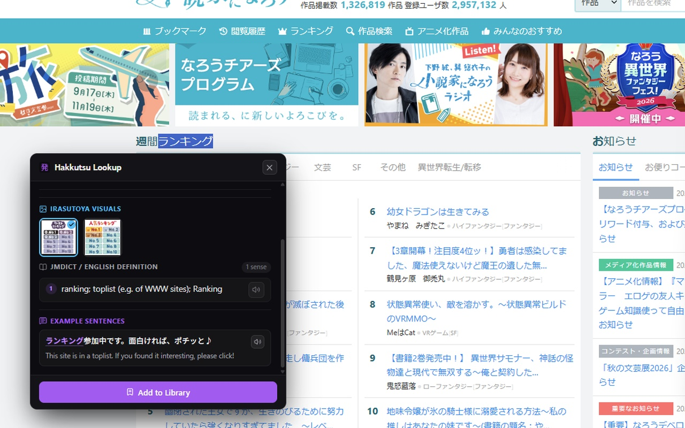
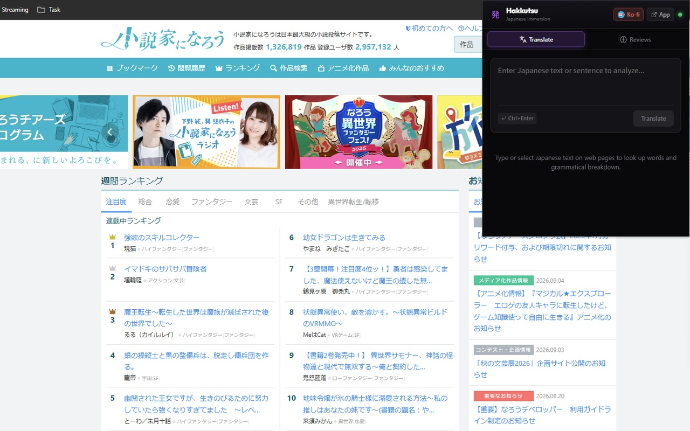
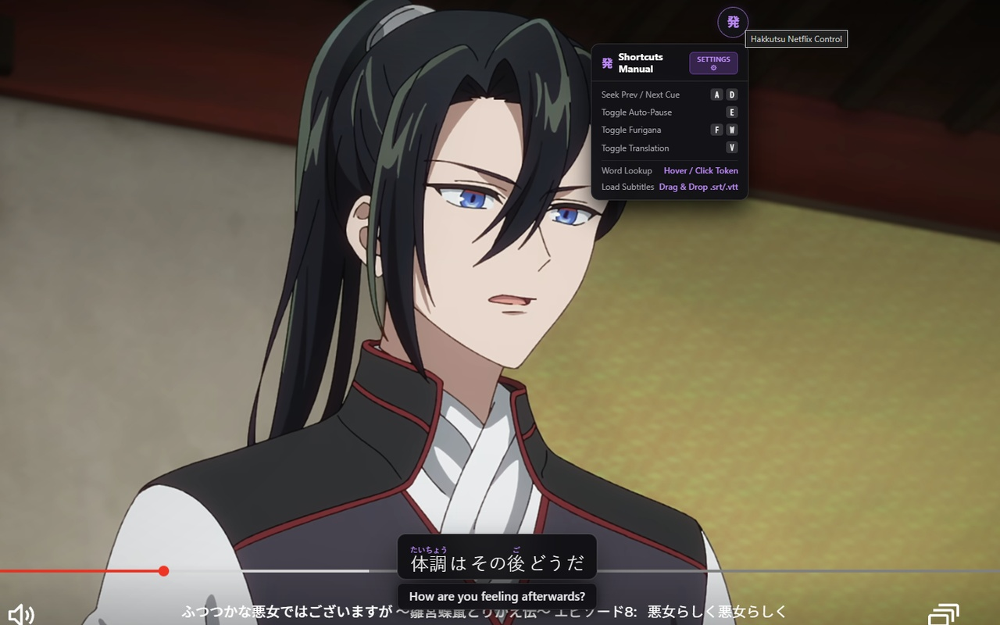
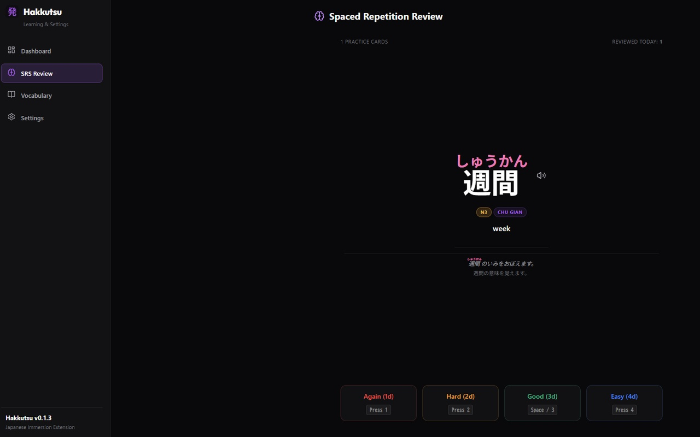
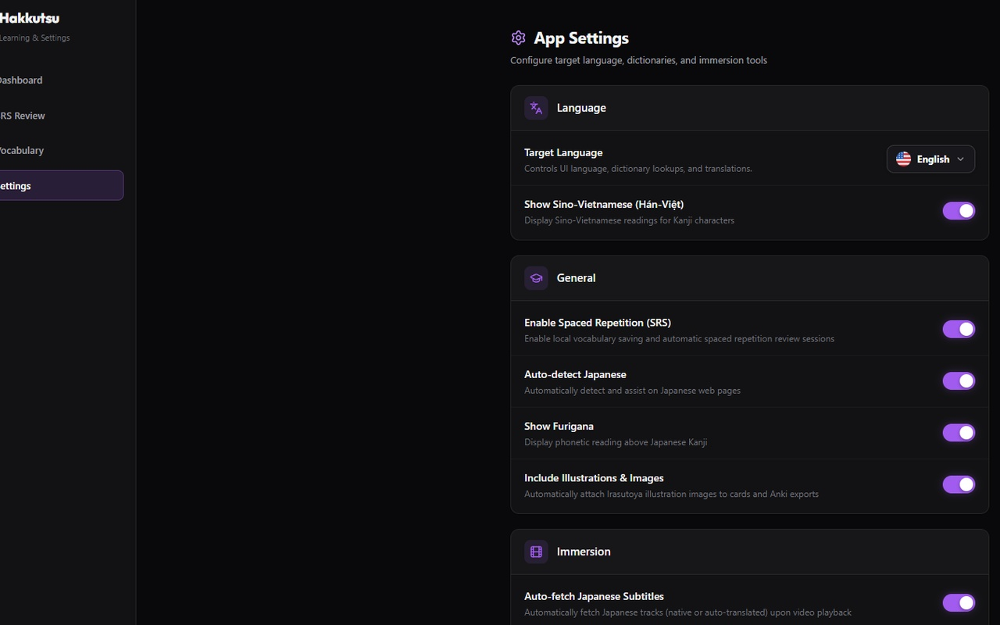

Instant dictionary lookups, 1-click Anki mining, dual subtitles, SRS study tools, and kanji visualizations — 100% free and private.
Read articles, watch Japanese media, and build long-term retention without leaving your current page.
Hover or select Japanese text on any website to display readings, definitions, pitch accent indicators, and difficulty levels in place.
Instantly export target vocabulary, example sentences, audio readings, and context definitions to your local Anki desktop software.
Study with interactive dual subtitles on YouTube, Netflix, third-party sites, and custom HTML5 video players with hover-to-pause definitions.
Review saved words using the built-in Spaced Repetition System. Track learning progress with charts, review stats, and kanji stroke order diagrams.
All dictionary lookups and user data stay on your device. Zero telemetry, no external accounts, no cloud servers, and no tracking.
No subscriptions, no hidden paywalls, no trial limits, and no ads. Open and free software for the Japanese learning community.
Explore Hakkutsu's clean interface, dictionary lookups, video subtitles, SRS review, and settings.

Instant word lookup on any webpage with furigana, pitch accent indicators, and JLPT tags.

Quick lookup popup with study streaks, total mined cards, and instant text analysis.

Interactive dual subtitles for YouTube & Netflix with click-to-pause vocabulary lookup.

Review mined vocabulary on schedule directly within the extension dashboard.

Configure lookup shortcuts, dictionary preferences, and 1-click Anki deck sync.
Hakkutsu is 100% free and open. If it helps you learn Japanese or save time sentence mining, consider supporting the project on Ko-fi.
Support on Ko-fi (ko-fi.com/joshiminh)